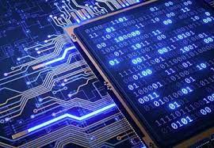

LISTA DEFINICIONES MATERIA SISTEMAS INFORMATICOS

LISTA DE DEFINICIÓN:
El Ordenador:
El ordenador es una máquina electrónica digital programable que ejecuta una serie de comandos para procesar los datos de entrada, obteniendo convenientemente información que posteriormente se envía a las unidades de salida. Una computadora está
compuesta por numerosos y diversos circuitos integrados y varios elementos de apoyo, extensión y accesorios, que en conjunto pueden ejecutar tareas diversas con suma rapidez y bajo el control de un programa (software). La constituyen dos partes
esenciales, el hardware, que es su estructura física (circuitos electrónicos, cables, gabinete, teclado, ratón, etc.), y el software, que es su parte intangible (programas, datos, información, documentación, etc). Desde el punto de vista funcional
es una máquina que posee, al menos, una unidad central de procesamiento (CPU), una unidad de memoria y otra de entrada/salida (periférico). Los periféricos de entrada permiten el ingreso de datos, la CPU se encarga de su procesamiento (operaciones
aritmético-lógicas) y los dispositivos de salida los comunican a los medios externos. Es así, que la computadora recibe datos, los procesa y emite la información resultante, la que luego puede ser interpretada, almacenada, transmitida a otra
máquina o dispositivo o sencillamente impresa; todo ello a criterio de un operador o usuario y bajo el control de un programa de computación.
La placa base:
Es una tarjeta de circuito impreso a la que se conectan los componentes que constituyen la computadora.Es una parte fundamental para montar cualquier computadora personal de escritorio o portátil o algún dispositivo. Tiene instalados una serie de
circuitos integrados, entre los que se encuentra el circuito integrado auxiliar (chipset), que sirve como centro de conexión entre el microprocesador (CPU), la memoria de acceso aleatorio (RAM), las ranuras de expansión y otros dispositivos.
Está instalada dentro de una carcasa o gabinete que por lo general está hecha de chapa y tiene un panel para conectar dispositivos externos y muchos conectores internos y zócalos para instalar componentes internos.La placa base, además incluye un
firmware llamado BIOS, que le permite realizar las funcionalidades básicas, como pruebas de los dispositivos, vídeo y manejo del teclado, reconocimiento de dispositivos y carga del sistema operativo.
Las Operaciones:
Es una biyección sobre una tupla y que obtiene un resultado, aplicando unas reglas preestablecidas sobre la tupla.Una operación matemática, para que sea considerada como tal, siempre tiene que garantizar un resultado, la operaciones que para ciertos
valores de la tupla no garantizan un resultado no pueden considerarse operaciones matemáticas propiamente dichas.Una operación matemática ha de dar un único resultado, si para una tupla dada puede presentan más de un resultado, no se puede considerar
operación matemática propiamente dicha.Una característica importante de una operación matemática es el número de terminaos de la tupla: aridad. Siendo la de dos términos: operación binaria de gran importancia.
La Maquina de Turing:
Es un dispositivo que manipula símbolos sobre una tira de cinta de acuerdo con una tabla de reglas. A pesar de su simplicidad, una máquina de Turing puede ser adaptada para simular la lógica de cualquier algoritmo de computador y es particularmente
útil en la explicación de las funciones de una CPU dentro de un computador.Originalmente fue definida por el matemático inglés Alan Turing como una «máquina automática» en 1936 en la revista Proceedings of the London Mathematical Societynota 1.
La máquina de Turing no está diseñada como una tecnología de computación práctica, sino como un dispositivo hipotético que representa una máquina de computación. Las máquinas de Turing ayudan a los científicos a entender los límites del cálculo mecánico.
Una máquina de Turing que es capaz de simular cualquier otra máquina de Turing es llamada una máquina universal de Turing (UTM, o simplemente una máquina universal). Una definición más matemáticamente orientada, con una similar naturaleza "universal",
fue presentada por Alonzo Church, cuyo trabajo sobre el cálculo lambda se entrelaza con el de Turing en una teoría formal de la computación conocida como la tesis de Church-Turing.
El Procesador:
Es un componente del hardware dentro de un ordenador, teléfonos inteligentes, y otros dispositivos programables.Su función es interpretar las instrucciones de un programa informático mediante la realización de las operaciones básicas aritméticas,
lógicas, y externas (procedentes de la unidad de entrada/salida). Su diseño y su avance ha variado notablemente desde su creación, aumentando su eficiencia y potencia y reduciendo el consumo de energía y el coste.Un ordenador puede contener más de una CPU
(multiprocesamiento). En la actualidad, los microprocesadores están constituidos por un único circuito integrado (chip) aunque existen los procesadores multinúcleo (varias CPU en un solo circuito integrado). Un circuito integrado que contiene una CPU también
puede contener los dispositivos periféricos y otros componentes de un sistema informático; similar a un microcontrolador (menos potente en RAM) se le denomina sistema en un chip (SoC).